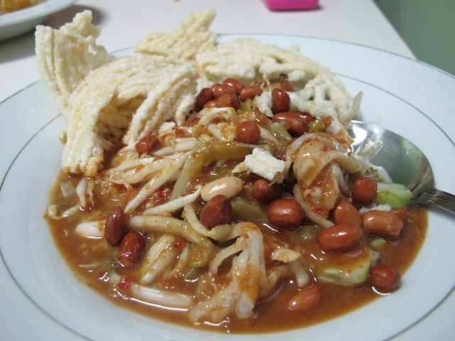

Asinan Betawi

Kafe Betawi
Asinan Betawi
Kafe Betawi
Betawi merupakan sebutan untuk suku asli kota Jakarta. Sejarah betawi yang begitu dinamis mempengaruhi warisan kulinernya. Makanan Khas Betawi dipengaruhi oleh budaya Cina, Eropa, dan Arab. Citarasa gurih dan sedap merupakan ciri khas khas makanan Betawi. Sebenarnya, Betawi memiliki banyak makanan khas yang lezat. Namun, seiring perkembangan pesat kota Metropolitan Jakarta yang sekaligus ibukota negara Indonesia ini, Makanan Khas Betawi sudah banyak yang langka bahkan nyaris punah
Masakan Betawi mudah ditemukan di acara-acara tertentu yang diselenggarakan di Jakarta se[erti pada acara Lebaran Betawi, pernikahan, hari raya atau di warung/restaurant yang menyajikan makanan khas Betawi
Beberapa jenis masakan Betawi memiliki kemiripan dengan masakan daerah lainnya seperti asinan Betawi mirip dengan asinan Bogor, perbedaannya hanya pada campuran bumbu-bumbu tertentu. Sebagian masakan Betawi hanya disajikan pada momen-momen tertentu misalnya sayur besan hanya bisa dijumpai pada prosesi besanan
KulinerJakarta.com adalah situs direktori tempat makan terlengkap yang memuat informasi tentang makanan khas Betawi dan tempat makan enak di Jakarta beserta promosi-promosi yang tersedia.